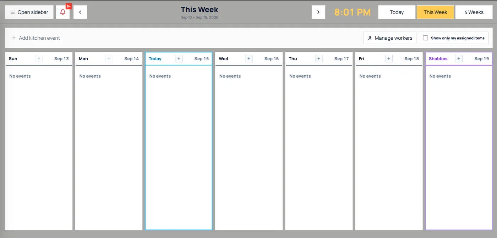
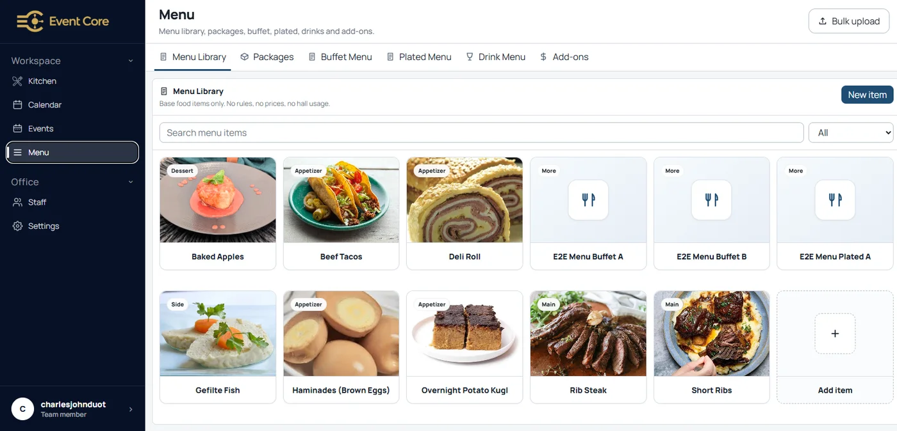

Kitchen Calendar
Weekly kitchen production view with a column per day, Today and Shabbos highlighting, quick-add kitchen events, worker management, and a filter to show only the signed-in staff member's assigned items.
Hall & event management SaaS platform for a New York-based client.
Event Core is a full-stack, multi-module SaaS platform I develop and maintain as a freelance full-stack developer (2026 – present). It runs the day-to-day operations of an event venue: bookings, calendar availability, event management, kitchen production, dining and seating, hall layouts, billing, reports, vendors, staff roles, permissions, and platform settings. Built with Next.js, React, TypeScript, Tailwind CSS, Supabase/PostgreSQL, and Playwright, and deployed through GitHub, Vercel, and Netlify.
Sole full-stack developer working directly with the client — responsible for implementation, testing, troubleshooting across frontend, backend, database, and deployment, and ongoing feature delivery.

The Event Core landing page with the hall management dashboard: bookings, revenue, occupancy, multi-hall calendar, upcoming events, and occupancy analytics.
Use the button below to open the deployed Event Core SaaS platform.
Click Here
Weekly kitchen production view with a column per day, Today and Shabbos highlighting, quick-add kitchen events, worker management, and a filter to show only the signed-in staff member's assigned items.

Menu management with a searchable item library, category badges, bulk upload, and separate tabs for packages, buffet, plated, and drink menus plus add-ons, feeding the kitchen-only production jobs.
Next.js and React with TypeScript, styled with Tailwind CSS in a component-based architecture. Responsive layouts for desktop dashboards and mobile use on the floor.
Supabase with PostgreSQL for authentication, persistence, and role-aware data access. CRUD workflows, forms, and operational management screens backed by real database state.
Playwright end-to-end tests for mutation and persistence flows; Git/GitHub branching and pull requests; hosted deployments on Vercel and Netlify.